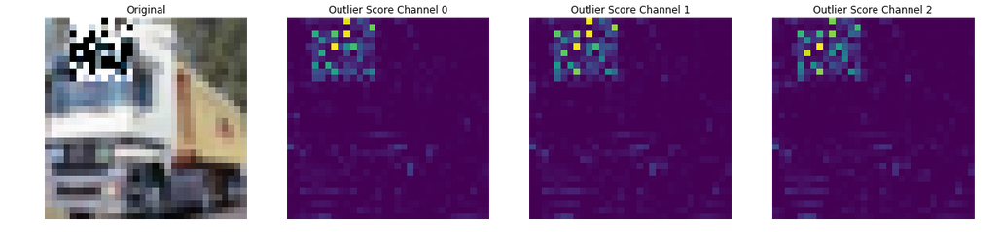

This page was generated from components/outlier-detection/cifar10/cifar10_outlier.ipynb.
Cifar10 Outlier Detection¶

In this example we will deploy an image classification model along with an outlier detector trained on the same dataset. For in depth details on creating an outlier detection model for your own dataset see the alibi-detect project and associated documentation. You can find details for this CIFAR10 example in their documentation as well.
Prequisites:
-
Ensure the istio-ingressgateway is exposed as a loadbalancer (no auth in this demo)
-
Ensure you install for istio, e.g. for the helm chart
--set istio.enabled=true
Tested on GKE and Kind with Knative 0.18 and Istio 1.7.3
[ ]:
!pip install -r requirements_notebook.txt
Ensure istio gateway installed
[ ]:
!kubectl apply -f ../../../notebooks/resources/seldon-gateway.yaml
[ ]:
!cat ../../../notebooks/resources/seldon-gateway.yaml
Setup Resources¶
[ ]:
!kubectl create namespace cifar10
[ ]:
%%writefile broker.yaml
apiVersion: eventing.knative.dev/v1
kind: broker
metadata:
name: default
namespace: cifar10
[ ]:
!kubectl create -f broker.yaml
[ ]:
%%writefile event-display.yaml
apiVersion: apps/v1
kind: Deployment
metadata:
name: hello-display
namespace: cifar10
spec:
replicas: 1
selector:
matchLabels: &labels
app: hello-display
template:
metadata:
labels: *labels
spec:
containers:
- name: event-display
image: gcr.io/knative-releases/knative.dev/eventing-contrib/cmd/event_display
---
kind: Service
apiVersion: v1
metadata:
name: hello-display
namespace: cifar10
spec:
selector:
app: hello-display
ports:
- protocol: TCP
port: 80
targetPort: 8080
[ ]:
!kubectl apply -f event-display.yaml
Create the SeldonDeployment image classification model for Cifar10. We add in a logger for requests - the default destination is the namespace Knative Broker.
[ ]:
%%writefile cifar10.yaml
apiVersion: machinelearning.seldon.io/v1
kind: SeldonDeployment
metadata:
name: tfserving-cifar10
namespace: cifar10
spec:
protocol: tensorflow
transport: rest
predictors:
- componentSpecs:
- spec:
containers:
- args:
- --port=8500
- --rest_api_port=8501
- --model_name=resnet32
- --model_base_path=gs://seldon-models/tfserving/cifar10/resnet32
image: tensorflow/serving
name: resnet32
ports:
- containerPort: 8501
name: http
protocol: TCP
graph:
name: resnet32
type: MODEL
endpoint:
service_port: 8501
logger:
mode: all
url: http://broker-ingress.knative-eventing.svc.cluster.local/cifar10/default
name: model
replicas: 1
[ ]:
!kubectl apply -f cifar10.yaml
Create the pretrained VAE Cifar10 Outlier Detector. We forward replies to the message-dumper we started.
Here we configure seldonio/alibi-detect-server to use rclone for downloading the artifact. If RCLONE_ENABLED=true environmental variable is set or any of the environmental variables contain RCLONE_CONFIG in their name then rclone will be used to download the artifacts. If RCLONE_ENABLED=false or no RCLONE_CONFIG variables are present then kfserving storage.py logic will be used to download the artifacts.
[ ]:
%%writefile cifar10od.yaml
apiVersion: v1
kind: Secret
metadata:
name: seldon-rclone-secret
namespace: cifar10
type: Opaque
stringData:
RCLONE_CONFIG_GS_TYPE: google cloud storage
RCLONE_CONFIG_GS_ANONYMOUS: "true"
---
apiVersion: serving.knative.dev/v1
kind: Service
metadata:
name: vae-outlier
namespace: cifar10
spec:
template:
metadata:
annotations:
autoscaling.knative.dev/minScale: "1"
spec:
containers:
- image: seldonio/alibi-detect-server:1.8.0-dev
imagePullPolicy: IfNotPresent
args:
- --model_name
- cifar10od
- --http_port
- '8080'
- --protocol
- tensorflow.http
- --storage_uri
- gs://seldon-models/alibi-detect/od/OutlierVAE/cifar10
- --reply_url
- http://hello-display.cifar10
- --event_type
- io.seldon.serving.inference.outlier
- --event_source
- io.seldon.serving.cifar10od
- OutlierDetector
envFrom:
- secretRef:
name: seldon-rclone-secret
[ ]:
!kubectl apply -f cifar10od.yaml
Create a Knative trigger to forward logging events to our Outlier Detector.
[ ]:
%%writefile trigger.yaml
apiVersion: eventing.knative.dev/v1
kind: Trigger
metadata:
name: vaeoutlier-trigger
namespace: cifar10
spec:
broker: default
filter:
attributes:
type: io.seldon.serving.inference.request
subscriber:
ref:
apiVersion: serving.knative.dev/v1
kind: Service
name: vae-outlier
namespace: cifar10
[ ]:
!kubectl apply -f trigger.yaml
Get the IP address of the Istio Ingress Gateway. This assumes you have installed istio with a LoadBalancer.
[ ]:
CLUSTER_IPS = !(kubectl -n istio-system get service istio-ingressgateway -o jsonpath='{.status.loadBalancer.ingress[0].ip}')
CLUSTER_IP = CLUSTER_IPS[0]
print(CLUSTER_IP)
Optionally add an authorization token here if you need one.Acquiring this token will be dependent on your auth setup.
[ ]:
TOKEN = "Bearer <my token>"
If you are using Kind or Minikube you will need to port-forward to the istio ingressgateway and uncomment the following
[ ]:
# CLUSTER_IP="localhost:8004"
[ ]:
SERVICE_HOSTNAMES = !(kubectl get ksvc -n cifar10 vae-outlier -o jsonpath='{.status.url}' | cut -d "/" -f 3)
SERVICE_HOSTNAME_VAEOD = SERVICE_HOSTNAMES[0]
print(SERVICE_HOSTNAME_VAEOD)
[ ]:
import json
import matplotlib.pyplot as plt
import numpy as np
import tensorflow as tf
tf.keras.backend.clear_session()
import requests
from alibi_detect.od.vae import OutlierVAE
from alibi_detect.utils.perturbation import apply_mask
from alibi_detect.utils.visualize import plot_feature_outlier_image
train, test = tf.keras.datasets.cifar10.load_data()
X_train, y_train = train
X_test, y_test = test
X_train = X_train.astype("float32") / 255
X_test = X_test.astype("float32") / 255
print(X_train.shape, y_train.shape, X_test.shape, y_test.shape)
classes = (
"plane",
"car",
"bird",
"cat",
"deer",
"dog",
"frog",
"horse",
"ship",
"truck",
)
def show(X):
plt.imshow(X.reshape(32, 32, 3))
plt.axis("off")
plt.show()
def predict(X):
formData = {"instances": X.tolist()}
headers = {"Authorization": TOKEN}
res = requests.post(
"http://"
+ CLUSTER_IP
+ "/seldon/cifar10/tfserving-cifar10/v1/models/resnet32/:predict",
json=formData,
headers=headers,
)
if res.status_code == 200:
return classes[np.array(res.json()["predictions"])[0].argmax()]
else:
print("Failed with ", res.status_code)
return []
def outlier(X):
formData = {"instances": X.tolist()}
headers = {
"Alibi-Detect-Return-Feature-Score": "true",
"Alibi-Detect-Return-Instance-Score": "true",
"ce-namespace": "default",
"ce-modelid": "cifar10",
"ce-type": "io.seldon.serving.inference.request",
"ce-id": "1234",
"ce-source": "localhost",
"ce-specversion": "1.0",
}
headers["Host"] = SERVICE_HOSTNAME_VAEOD
headers["Authorization"] = TOKEN
res = requests.post("http://" + CLUSTER_IP + "/", json=formData, headers=headers)
if res.status_code == 200:
od = res.json()
od["data"]["feature_score"] = np.array(od["data"]["feature_score"])
od["data"]["instance_score"] = np.array(od["data"]["instance_score"])
return od
else:
print("Failed with ", res.status_code)
return []
Normal Prediction¶
[ ]:
idx = 1
X = X_train[idx : idx + 1]
show(X)
predict(X)
Lets check the message dumper for an outlier detection prediction. This should be false.
[ ]:
!kubectl logs -n cifar10 $(kubectl get pod -n cifar10 -l app=hello-display -o jsonpath='{.items[0].metadata.name}')
Outlier Prediction¶
[ ]:
np.random.seed(0)
X_mask, mask = apply_mask(
X.reshape(1, 32, 32, 3),
mask_size=(10, 10),
n_masks=1,
channels=[0, 1, 2],
mask_type="normal",
noise_distr=(0, 1),
clip_rng=(0, 1),
)
[ ]:
show(X_mask)
predict(X_mask)
Now lets check the message dumper for a new message. This should show we have found an outlier.
[ ]:
!kubectl logs -n cifar10 $(kubectl get pod -n cifar10 -l app=hello-display -o jsonpath='{.items[0].metadata.name}')
We will now call our outlier detector directly and ask for the feature scores to gain more information about why it predicted this instance was an outlier.
[ ]:
od_preds = outlier(X_mask)
We now plot those feature scores returned by the outlier detector along with our original image.
[ ]:
plot_feature_outlier_image(od_preds, X_mask, X_recon=None)
Tear Down¶
[ ]:
!kubectl delete ns cifar10
[ ]: